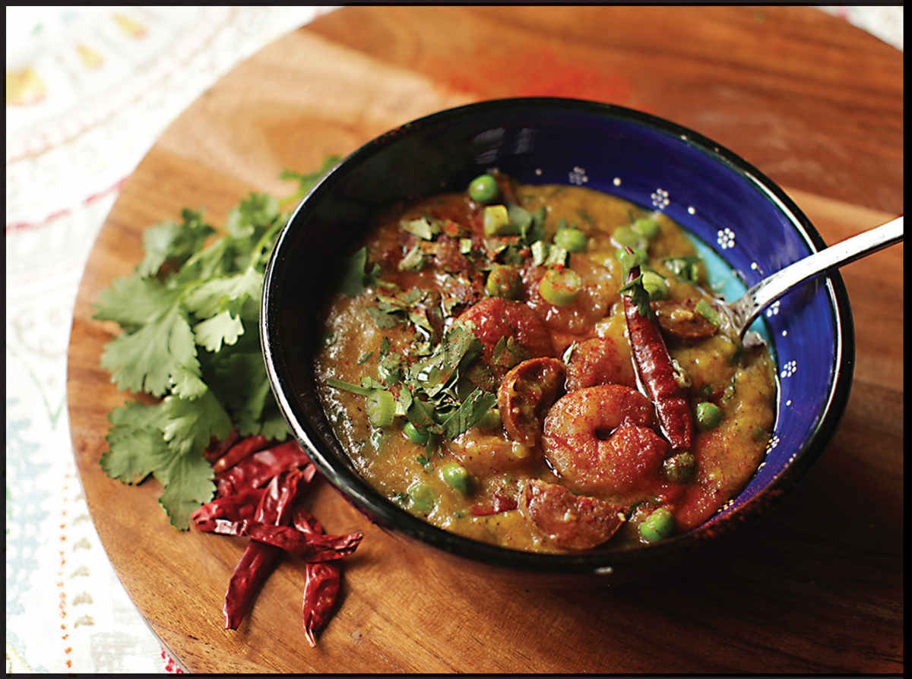

CONGEE WITH SHRIMP, SAFFRON, AND SPANISH CHORIZO
Yield Serves 4 |
Active Time 30 minutes Total Time 90 minutes |
Smoked Spanish paprika is also sold as pimentón de la vera and comes in sweet (dulce), medium (agridulce), and spicy (picante) varieties. Any will work, though I typically keep agridulce on hand.
INGREDIENTS
1 pound (450 g) shell-on shrimp, peeled, shells reserved
¼ teaspoon (1 g) baking soda
1 teaspoon (5 g) paprika, preferably Spanish smoked paprika (see Note)
Kosher salt
3 tablespoons (45 ml) extra virgin olive oil
8 medium garlic cloves (20 to 25 g)
6 ounces (180 g) Spanish chorizo, split in half lengthwise, casing removed and discarded, cut into ¼- to ½-inch half-moons
Two coin-sized slices fresh ginger
8 scallions, cut into ¼-inch pieces
½ cup (about 3.5 ounces/100 g) short-grain or jasmine rice
8 small dried chiles, such as Sichuan or árbol (omit if you don’t want it spicy)
Pinch of saffron threads
2 dried bay leaves
Water or low-sodium chicken or vegetable stock (6 cups for short-grain, 5 cups for jasmine)
½ cup (about 2 ounces/60 g) frozen peas, thawed
Handful of minced fresh cilantro leaves
This congee starts with a flavorful shrimp and chorizo stir-fry. The smoky red oil left behind forms the flavor base for the rice, though to be honest, you could skip the whole rice bit and simply serve the chorizo and shrimp stir-fry on its own with a side of regular-old steamed rice and nobody would complain.
DIRECTIONS
1 Combine the peeled shrimp, baking soda, Spanish paprika, a big pinch of kosher salt, and 1 tablespoon (15 ml) of the olive oil in a medium bowl. Mince 4 cloves of the garlic and add to the bowl. Toss the shrimp thoroughly and set aside.
2 Meanwhile, combine the remaining 2 tablespoons (30 ml) olive oil and the Spanish chorizo in a wok over medium-low heat. Cook, stirring and tossing frequently, until the chorizo has rendered most of its fat and is starting to crisp around the edges, about 8 minutes. Remove the chorizo from the wok using a slotted spoon and transfer it to a clean bowl.
3 Smash the remaining 4 garlic cloves with the side of a knife. Add the shrimp shells, ginger, and smashed garlic to the chorizo oil in the wok and set over medium-low heat. Cook, stirring and tossing frequently, until the shrimp shells are bright red and the garlic is starting to brown, about 7 more minutes. Using a slotted spoon, remove the garlic, ginger, and shrimp shells from the wok and discard, pressing on them with a second spoon to release as much fat back into the wok as possible.
4 Increase the heat to high and heat until the shrimp-infused chorizo fat is just starting to show wisps of smoke. Immediately add the marinated shrimp and stir-fry until mostly cooked through and starting to brown around the edges, about 2 minutes. Add the scallions and continue to stir-fry for 1 minute. Transfer the shrimp and scallions to the bowl with the chorizo and set aside in the refrigerator.
5 Return the wok to the heat and reduce the heat to medium-low. Add the rice and dried chiles and cook, stirring and tossing frequently, until the chiles smell toasted and the rice is translucent around the edges, about 2 minutes. Add the saffron and bay leaves and stir-fry for 30 seconds.
6 Add the water or stock, increase the heat to high, and bring to a simmer. Stir the rice once, making sure no stray grains are clinging to the side of the pan above the liquid. Cover the wok and reduce the heat to a bare simmer. Cook, stirring occasionally, until the rice is tender and the congee has thickened to a creamy porridge, about 1 hour.
7 Stir in the thawed peas, cilantro, shrimp, scallions, and chorizo, reserving some of each for garnish. Top with the reserved frozen peas, cilantro, shrimp, scallions and chorizo, and serve immediately.
